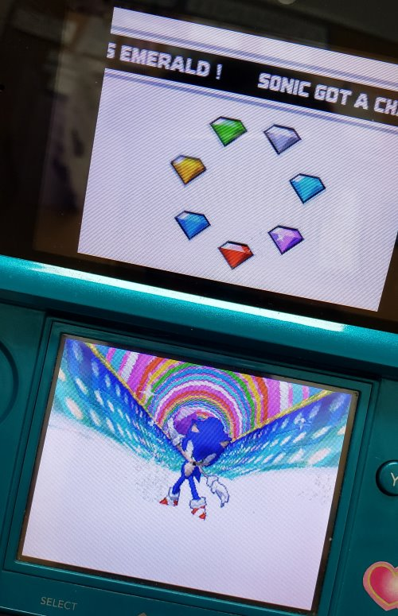

sonic rush
logs
19.jun.24 i finally got the very last chaos emerald that was missing for sonic's timeline.  i still don't know if that's the correct word. i still need to complete sonic and blaze' final boss, but i have a feeling i might just leave it here for the time being. i don't feel like torturing myself just for the sake of a final boss. i rather just move on to something else. but i had my fun with this game!! now that i am Older i think i appreciate the game's mechanics and just overall feel of it wayyyy more. i might replay the earlier levels that i played when i was like 10 years old another time.
i remember the soundtrack which i found on internet archive btw... being super catchy when i was little as well but i can also appreciate it and jam way more nowadays. i find it a bit funny how so many things that i've grown to love in my music are present in this soundtrack.
but yeah that is pretty much my story with sonic rush. pretty fun overall. some bosses can be fun but others can be... such a pain. might be a skill issue on my part though BUT to be fair some of them can be quite annoying. i'll probably watch some final boss videos on youtube to see how the story in this game ends. blaze i will miss you meow meow... 
oh also playing this game has made me wanna replay sonic the hedgehog (2006) because that is another sonic game of my childhood. we'll see if i ever get to it. i also have sonic mania on my laptop got it free on epic games and i will probably also try that at some point too! lots of games too play...
09.jun.24 i have been playing this game on and off since i was like 9 years old... this game at this point has been ingrained in my brain as an iconic moment of my childhood. i love playing this game and it's insane soundtrack when i was little. it was also my introduction to the sonic series and probably why i love blaze the cat meow meow so much to this day despite barely engaging in any sonic games throughtout my gamer life.
the thing is that i would frequently get stuck in levels or bosses (and i still do...) so that is the main reason as to why to this day. me at 24 years old. has not finished this game....
BUT! i was able to pick up my 3DS again and since sonic rush is literally the only DS/3DS cardtridge i own, i decided to boot it up again. man. YES. i am deeply nostalgic for this game, but i also love the look and feel of it despite me having such a hard time with it sometimes. it is so much fun after i've died a couple of times and finally get the hang out of the level. I SWEAR!!
anyways, i picked it up recently from where i left off, zone 7. been playing it for the past week and i am currently at the final boss of the game! in both sonic's and blaze's ... timeline? save? idk whats the correct term... but sadly i have been having A LOT of trouble with this boss(es) they are the same thing and i am getting a bit burnt out!!! i really want to finish this game but oh my god. i am not having fun with this one... i'm gonna see if turning on easy mode can maybe alleviate this boss fight...
i might talk a bit more about more about the soundtrack in a future listening log and link it here when i do because this is seriously one of my favorite video game soundtracks. thank you hideki naganuma, CEO of funky fresh beats.